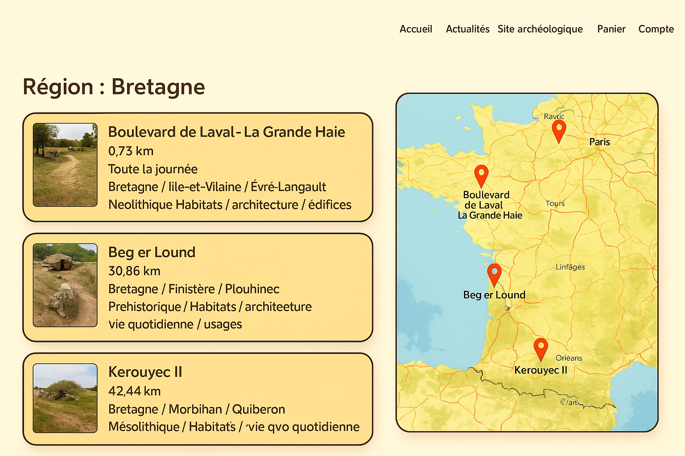
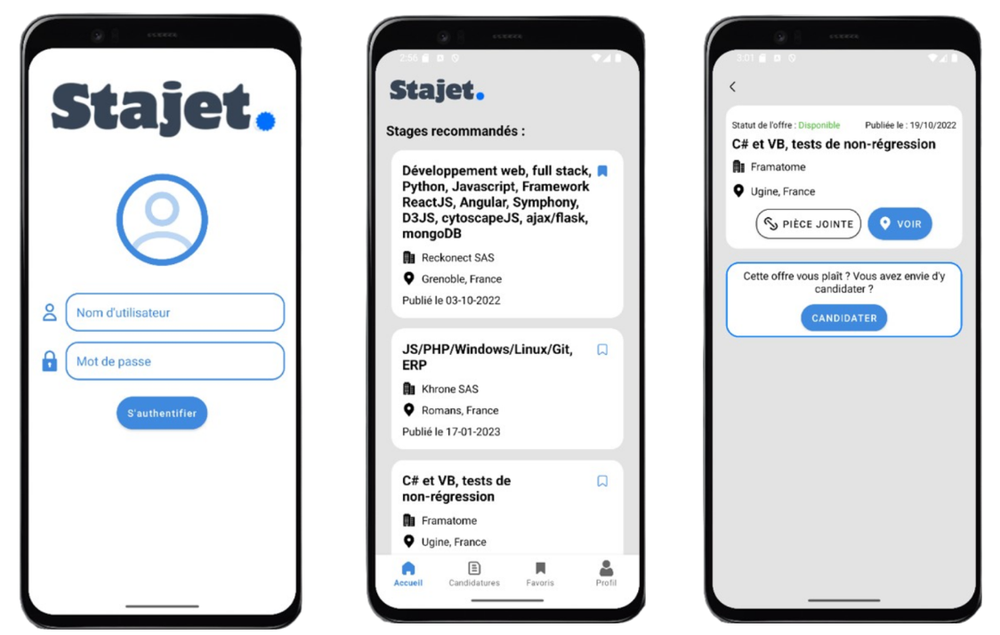
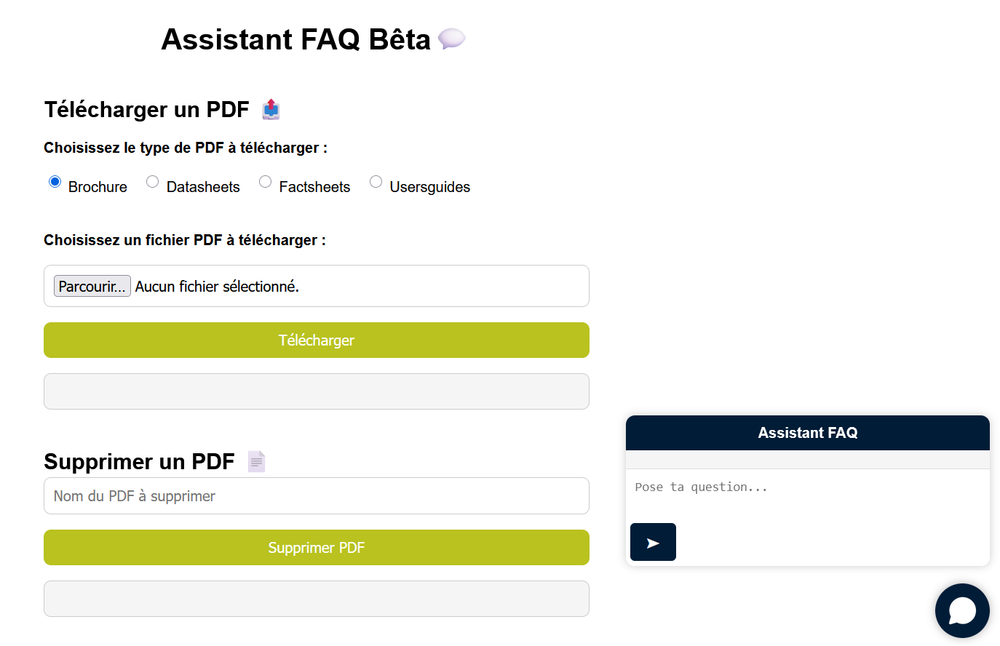
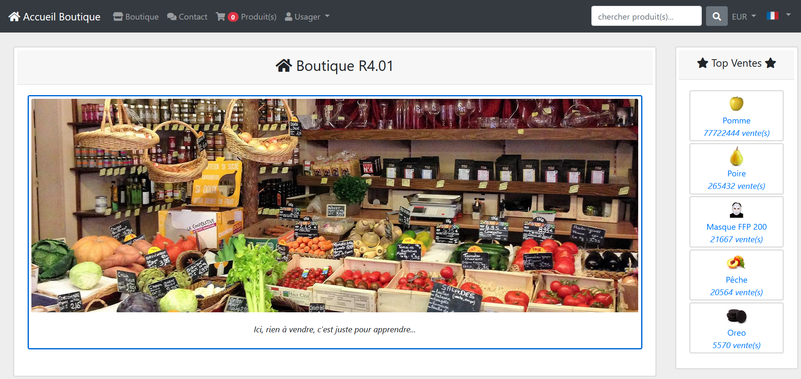
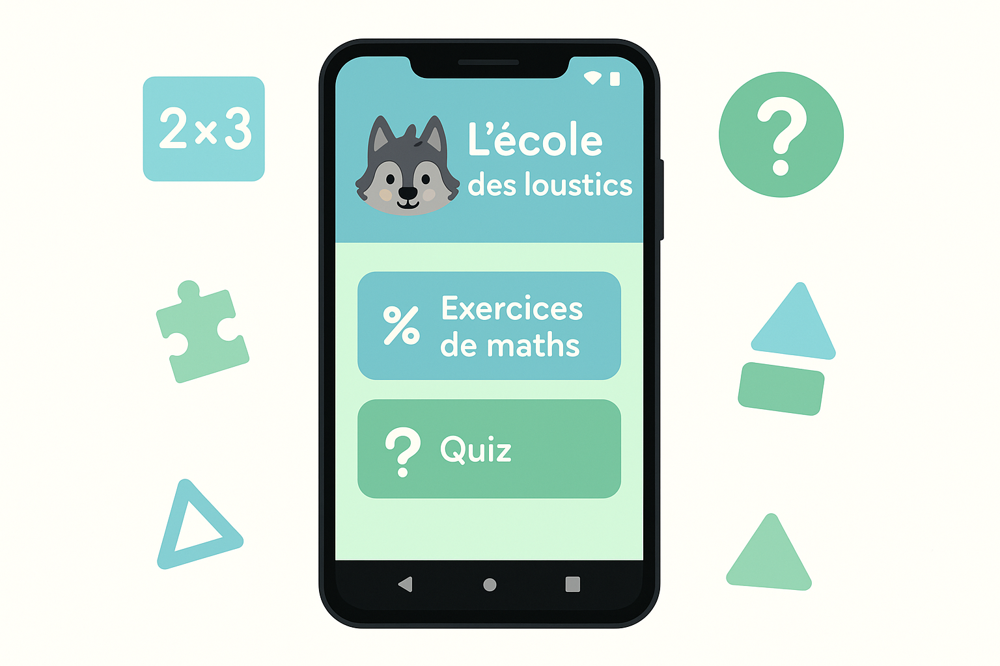

À propos de moi

Actuellement en deuxième année de BUT Informatique (IUT2 Grenoble), je développe mes compétences en Java, Python, C++ et PHP pour concevoir des systèmes robustes et maintenables.
J'ai conçu et déployé des API REST avec Flask et implémenté des fonctionnalités de gestion de données avancées, tout en optimisant des bases de données PostgreSQL.
Passionné par l'innovation, j'explore les technologies de pointe telles que les LLM (Mistral-large, GPT-4) pour automatiser et améliorer les processus de développement.
Projet Post-BUT
À l'issue de mon BUT Informatique, mon objectif était de poursuivre mes études en Master afin d'approfondir mes compétences en ingénierie logicielle et en architecture des systèmes d'information. N'ayant pas été retenu pour les Masters visés, j'ai pris la décision de m'insérer directement sur le marché du travail.
Je rejoindrai très prochainement Straton Automation en tant que développeur à part entière, où je pourrai continuer d'apporter ma contribution technique et m'épanouir au sein d'une équipe R&D stimulante.
Compétences
Langages
Java, JavaScript (Node.js), C++, PHP, HTML, CSS, Python
Bases de données
PostgreSQL, Doctrine
Frameworks & Styles
Symfony, Tailwind CSS
Outils & Tech
GitHub, LLM (GPT-4, Mistral large), API REST
Projets
Gestion des réservation (Archéopass)
Backend · PHP (MVC)
J’ai implémenté la logique métier pour le pack « rencontre » et le pack « visite », ainsi que les endpoints REST correspondants en PHP

Contexte
Archéopass est une application web destinée à valoriser le patrimoine culturel français. Elle propose deux packs : « rencontre » pour visiter en groupe (≤ 30 pers.) et « visite » pour créer un itinéraire jusqu’à 5 sites.
Fonctionnalités
- Création et gestion du pack « rencontre » (tarif dégressif par groupe)
- Création et gestion du pack « visite » (tarif dégressif nombre de visite)
- Endpoints REST pour création, lecture, mise à jour et suppression des réservations
- Envoi de notifications par e-mail lors de la réservation
Techniques & acquis
Application mobile Android
FullStack · Java
Optimisation de l’app existante : refonte cycle de vie, sécurisation des appels API et couverture de tests renforcée.

Contexte
SAE 4 « Améliorer la qualité et optimiser une application existante ». J’ai pris en charge le volet Android de l’application « Mon carnet de suivi de recherche de stage ».
Contributions clés
- Réorganisation du cycle de vie (
MainActivity,LoginActivity…) - Nettoyage des appels réseau : couche
api/+ mock des réponses - Ajout de tests unitaires JUnit 4 / Mockito (83 % de couverture) et tests UI Espresso (92 % de stabilité)
- Optimisation des performances : temps d’exécution des suites tests ÷ 2
Techniques & acquis
Chatbot RAG Straton®
FullStack · Python
Assistant conversationnel technique alimenté par la documentation interne PDF de Straton Automation.

Contexte
Projet majeur de mon alternance chez Straton Automation : la conception d’un chatbot RAG pour réduire de 40 % les tickets de support de niveau 1. J'ai pris en charge le cycle complet : de l'indexation vectorielle des manuels PDF à la restitution bilingue par un LLM.
Fonctionnalités & Réalisations
- Développement de l'extraction documentaire (PDF) avec PyMuPDF, incluant des filtres algorithmiques (rejet d'images monocouleurs et sous-dimensionnées).
- Recherche vectorielle (Retrieval) via FAISS et génération avec Mistral AI (Mistral-small 3.1).
- Optimisation (C2) : Résolution d'une fuite mémoire critique en gérant le cycle de vie de l'instance du LLM, réduisant l'empreinte de la RAM de 20%.
- Création d'une interface Web Symfony communiquant avec une API Flask backend.
Savoir-être (C6) & Compétences
Ce projet m'a permis de travailler en méthode Scrum au sein de l'équipe R&D. J'ai dû argumenter mes choix d'architecture (ex. API Mistral souveraine vs LLM local open-source) devant le directeur technique et collaborer en direct avec les autres ingénieurs.
Build System Automatisé
DevOps & Backend · Python / Docker
Conception d'un orchestrateur de compilation conteneurisé sous Docker géré par un Daemon Python. Suivi en temps réel des logs par SSE.
Contexte
Deuxième mission d'envergure de mon alternance chez Straton Automation : restructurer le processus de compilation des runtimes cibles (ARM, x86) pour l'équipe R&D en garantissant la reproductibilité et l'isolation via le motif "Builder Pattern".
Fonctionnalités & Réalisations
- Création d'un Daemon Python agissant comme chef d'orchestre pour piloter des conteneurs éphémères Docker.
- Gestion du cycle de vie des builds via des tickets JSON (pending, processing, completed).
- Optimisation des performances (C2) : Utilisation d'un
ThreadPoolExecutorpour gérer les concurrences sans saturer le CPU/RAM de l'hôte. Réduction du temps de compilation ARM de 140s à 41s. - Implémentation d'une diffusion de logs en temps réel (streaming) vers le navigateur de l'utilisateur via la technologie Server-Sent Events (SSE).
Savoir-être (C6) & Compétences
Ce projet m'a permis de démontrer ma capacité à concevoir une architecture logicielle de bout en bout (C1). Les choix techniques (notamment SSE vs WebSockets/Polling) ont été justifiés lors des réunions d'équipe.
Boutique Symfony
Backend · PHP / Symfony
Implémentation complète d’un panier, de la persistance BD (Doctrine) et du module sécurité sur une mini-boutique universitaire.

Contexte
Réalisé dans le cadre universitaire (BUT Info S3, module R4.01), ce projet consistait à développer,
étape après étape, une mini-boutique en Symfony. Nous y avons ajouté un panier
persistant, migré les données vers Doctrine ORM, transformé le panier en commandes
stockées en base puis sécurisé l’ensemble via un formulaire de connexion et une gestion
fine des rôles (ROLE_CLIENT).
Fonctionnalités
- Service
PanierService: ajout, retrait, total, vidage, session - Routes & contrôleurs CRUD (ajouter / supprimer / vider)
- Migrations Doctrine + fixtures (4 catégories, 12 produits)
- Entités Usager, Commande, LigneCommande ; conversion panier → commande
- Authentification form-login, rôles, accès protégés (
ROLE_CLIENT) - Barre de navigation dynamique : compteur d’articles + login/logout
Techniques & acquis
École des Loustics
FullStack · Android (Java)
Application éducative : tables, additions, quiz culture Générale + comptes multi-élèves.

Contexte
Mini-projet Android (module R4.01 – Programmation Mobile, BUT Info S3). Objectif : concevoir de A à Z une appli d’auto-évaluation pour l’école primaire : exercices de mathématiques (tables de multiplication, série d’additions) et quiz de culture générale, avec gestion de plusieurs utilisateurs.
Fonctionnalités
- MVC complet : Activities (contrôle), XML (vue), modèles Java pour logique.
- Système de comptes élèves (
Room DB) : CRUD & affichage RecyclerView. - Deux modules d’exercices : tables/additions chronométrées (
CountDownTimer) et quiz QCM 10 questions. - Score final & feedback immédiat, historique par utilisateur.
Techniques & acquis
Contact
✔︎ Message envoyé